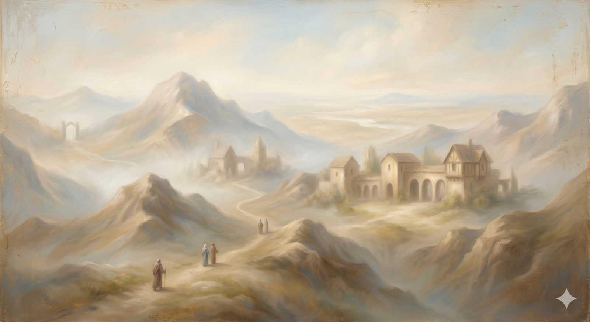

The Delectable Mountains
The heights with the longest views — knowing God himself, and learning to tell the true picture of him from the counterfeits.
"One thing have I asked of the LORD... that I may dwell in the house of the LORD all the days of my life, to gaze upon the beauty of the LORD." Psalm 27:4 (ESV)
The road climbs into high country now — the Delectable Mountains, a land of gardens, orchards, springs, and long views, kept by shepherds whose names are Knowledge, Experience, Watchful, and Sincere. The pilgrims rest here in good company, and the shepherds do two things for them. They take them up to high places to see — including a distant, hazy glimpse of the Celestial City itself through a special glass. And they take them to certain dangerous spots and warn them what to avoid. Sight and discernment together: that is what this landmark gives.
It is the most restful stop since Palace Beautiful, and the clearest. After the valleys and the dungeon, the pilgrim is given height — the long view that puts the whole journey in perspective. And the height is mostly about one thing: coming to know the God he has been walking toward, and learning to tell the true picture of him from the counterfeits.
Part OneThe country of knowing God
The shepherds' first gift is the view, and the view is God himself. Everything on the road so far — the diagnosis, the gospel, the long climb — was in service of this: not merely being forgiven by God, or used by him, but knowing him, the way you come to know a person whose company you have kept through hard country. The whole point of the journey was never the journey. It was the One at the end of it, glimpsed now through the shepherds' glass, still far off and hazy, but real, and worth every mile.
To know him is to learn his character — and Scripture is unembarrassed about naming it. He is holy, set apart in a purity that would undo us if we met it unprotected. He is just, with a moral grain that runs true through all things. He is sovereign, genuinely in charge of a world that often looks out of control. And he is love, not as a sentiment but as the very life he has lived from eternity among Father, Son, and Spirit — the fountain we glimpsed at the very start, now seen from the mountains as the source of everything. These are not competing attributes to be balanced against each other. They are one God, seen from different heights, and the higher you climb the more you see that his holiness and his mercy were never at war.
Part TwoHill Error and the old counterfeits
But the shepherds also lead the pilgrims to a mountain called Error, whose far side is a sheer cliff, and show them the bodies of those who fell by listening to false teaching. It is a sobering exhibit, and a necessary one: knowing God truly means being able to recognize the counterfeits, because there have always been counterfeits, and they are remarkably consistent.
Here is the thing most worth understanding about doctrinal error, and it changes how you fight it: heresy is almost never invented from nothing. It is, nearly always, a partial truth pulled out of balance — one real biblical emphasis stretched until it crowds out everything around it. The enemy rarely asks the church to deny Scripture outright; he asks it to overweight one part until the whole picture is distorted. And the people who fell for these errors were mostly not villains. They were often sincerely trying to protect something true. The distortion came not in what they wanted to guard, but in how they resolved it.
In plain terms
Most heresies are not lies with nothing true in them. They are one true thing turned up so loud it drowns out the rest — overprotecting Jesus' divinity until his humanity disappears, or his oneness with God until the three Persons collapse into one.
This is why the test of a teaching is not "is there anything true here?" — there usually is. The test is "what true thing has been left out or crushed to make room for this one?"
The ancient errors keep coming back in new clothes: that Jesus was less than fully God; that we can save ourselves by effort; that the spiritual is pure and the physical is corrupt; that the God of the Old Testament and the Father of Jesus are two different Gods; that following Christ should make you rich and comfortable. Each takes something real and bends it. You can walk the whole of Hill Error — the seven counterfeits laid out one by one, each with the real question beneath it — but here it is enough to learn the shepherds' lesson: a teaching can sound biblical, can quote Scripture, can be held by sincere people, and still be leading toward the cliff. The way to know the counterfeit is to know the real thing so well that the imbalance shows.
Heresy is rarely a lie. It is one true thing turned up until it drowns out all the others.
The peaks & paths of this high country
Mount Error
The heresies, each a peril on the slope — old counterfeits in new clothes.
Open nowMount Caution
The warning of the fallen — apostasy, presumption, and perseverance.
OverviewThe Annexes
Contested ground, fairly mapped — Calvinism & Arminianism, science & faith.
OverviewThe shepherds send the pilgrims on with directions, warnings, and a note about the country ahead — for the next stretch of road looks, deceptively, like the easiest of all. It is pleasant, and level, and the air itself will tempt a tired pilgrim to do the one thing the shepherds warned against: to lie down, and close his eyes, and sleep.